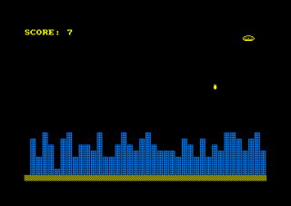
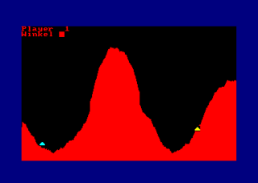
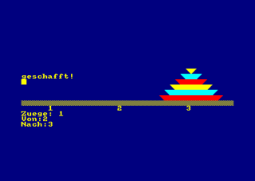
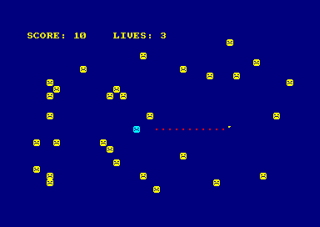
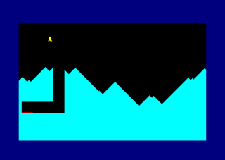

Die Zeitschrift CPC-International (1985-1993) bot in der Kategorie "1kB Programme" für jedes abgedruckte Listing 100 DM, vorausgesetzt es war nicht länger als 1024 bytes. Von den insgesamt 5 Programmen die ich eingeschickt habe, wurde das Spiel Emergency in der Ausgabe 6/7 1991, Seite 87 veröffentlicht.
Die Programme sind als Disk-Image verfügbar.
!!!!ALARM!!!! Sie als Kapitän des Raumschiffs KENTERPRISE bekommen gerade die Meldung, dass beim Erforschen der gebirgigen Oberfläche des noch relativ unbekannten Planeten PROXIMA 4-712Y ein Meteorit den Treibstofftank beschädigt hat. Es gibt nur einen Ausweg - eine geeignete Landebahn zu finden, bevor der Tank völlig ausläuft. Doch unglücklicherweise reicht der Treibstoff nur noch bis zu einer verlassenen Ruinenstadt.
Ihre Aufgabe ist es nun, mit Bomben gezielt die Gebäude der Stadt zu zerstören, um sich
eine Landebahn zu schaffen. Dabei fliegt Ihr Raumschiff von links nach rechts über den
Bildschirm und verliert ständig an Höhe. Mit der <SPACE>-TASTE können Sie unbegrenzt Bomben
abwerfen, aber immer nur eine gleichzeitg!
Es ist ratsam, immer die höchsten Gebäude zu bombardieren,
sonst kommt es unweigerlich zur Kollision. Sind Sie sicher gelandet, kommt der nächste Level,
aber mit dem Unterschied, daß Ihr Raumschiff noch schneller sinkt.
|  |
10 MODE 1:INK 0,0:BORDER 0:INK 3,11:w=110:h=5 20 SYMBOL 250,7,56,64,169,64,127,31:SYMBOL 251,224,28,2,149,1,254,248 30 SYMBOL 240,254,146,254,146,254,146,254,146 40 MODE 1:LOCATE 1,1:PRINT"SCORE:";sc:LOCATE 1,25:PRINT STRING$(40,207);:PEN 3 50 FOR n=2 TO 40:FOR y=0 TO RND*h+2 60 LOCATE n,24-y:PRINT CHR$(240); 70 NEXT:NEXT:x=1:y=2:f=1:PEN 1 80 LOCATE x,y:PRINT CHR$(8);" "CHR$(250);CHR$(251):x=x+1:IF x>40 THEN x=1:y=y+1 90 IF y=24 AND x=15 THEN LOCATE 17,12:PRINT CHR$(24);"GESCHAFFT!";CHR$(24):FOR t=1 TO 1500:NEXT:w=w-5:h=h+1:GOTO 40 100 SOUND 1,2300,18:SOUND 2,2298,18 110 IF TEST(x*16+8,410-y*16)THEN SOUND 1,1000,50,,,,15:LOCATE x,y:PRINT CHR$(8);" "CHR$(238):GOTO 180 120 IF NOT INKEY(47)AND f THEN a=x:b=y+1:f=0:z=7 130 IF f=1 THEN FOR i=1 TO w:NEXT:GOTO 80 140 LOCATE a,b:PRINT " ":b=b+1 150 IF TEST(a*16-8,402-b*16)=3 THEN z=z-1:sc=sc+1:LOCATE 7,1:PRINT sc 160 LOCATE a,b:IF z=0 OR b=25 THEN f=1:PRINT CHR$(11);" ";:GOTO 80 170 PRINT CHR$(252);:FOR i=1 TO w/2:NEXT:GOTO 80 180 LOCATE 17,12:PRINT CHR$(24);"SCHADE!";CHR$(24):LOCATE 14,14:PRINT"Nochmal (j/n)?" 190 a$=UPPER$(INKEY$):IF a$<>"J"AND a$<>"N"THEN 190 200 IF a$="J"THEN RUN |
In diesem Spiel versuchen zwei Spieler gegenseitig ihre Bodenkanone über einen gezielten Schuss zu zerstören. Über die Angabe der Schussstärke und des Schusswinkels wird die Flugbahn des Geschosses bestimmt, die zudem über einen Berg führen muss.
|  |
100 h=100:s=2:a=FIX(RND*100)*2:b=FIX(RND*110)*2+400 110 MODE 1:INK 0,0:DEG:FOR n=0 TO 640 STEP 2 120 IF RND<0.4 THEN s=-s 130 h=h+s:y=h+SIN(n+170)*f:IF y<0 THEN y=0 140 IF a=n THEN c=y ELSE IF b=n THEN d=y 150 MOVE n,y:IF n>200 AND n<350 THEN f=210 ELSE f=100 160 DRAW n,0,3:NEXT:PLOT 0,-2,2 165 TAG:MOVE a,c+16:PRINT CHR$(244);:PLOT 0,-2,1:MOVE b,d+16:PRINT CHR$(244); 180 TAGOFF:PEN 3:LOCATE 1,1:PRINT "Player ";pl+1 190 INPUT"Winkel ",w:w=90-w:INPUT "Staerke ",s 200 IF pl THEN w=-w:e=b:f=d ELSE e=a:f=c 210 x=SIN(w):y=COS(w):vx=s*x/4:vy=s*y/4 220 x=e+x+8:y=f+y+16:TAG:t=0 240 WHILE t=0 AND x>0 AND x<640 AND y>0 AND y<400 250 CALL &BD19:PLOT x,y,0:x=x+vx:y=y+vy:vy=vy-0.09 270 t=TEST(x,y):PLOT x,y,1:WEND 290 PLOT 0,-2,1:MOVE x-8,y+8:PRINT CHR$(238); 300 FOR n=1 TO 100:NEXT:MOVE x-8,y+8:PRINT " "; 320 pl=ABS(pl=0):TAGOFF:IF t=3 OR t=0 THEN 180 330 PRINT"Player";t;"hat gewonnen" |
Die Türme von Hanoi ist ein bekanntes Strategiespiel. Ziel ist es, ein Turm bestehend aus Steinen an einem anderen Ort neu aufzubauen indem jeder einzelne Stein umgeschichtet wird. Die Umschichtung erfolgt über die Angabe der Position des Steines sowie des Zielortes. Dabei darf der Stein nicht größer als der Stein am Zielort sein.
|  |
100 MODE 1:INPUT"Steine:";w:IF w<2 OR w>6 THEN RUN
110 ms=2^w-1:DIM st(w,3):CLS:LOCATE 1,15:PRINT STRING$(40,207)
120 FOR n=15-w TO 14:LOCATE 1,n:f=(n MOD 3)+1:z=z+1:s$(z)=SPACE$(6-z)+CHR$(15)+CHR$(f)+CHR$(213)
+STRING$(z*2-2,143)+CHR$(212):PRINT s$(z):st(w-z+1,1)=z:NEXT:h(1)=w
130 LOCATE 5,16:PEN 1:PRINT 1;SPC(10);2;SPC(10);3:WINDOW#1,1,40,17,25
140 CLS#1:PRINT#1,"Zuege:";ms-x:INPUT#1,"Von:",a:IF a<1 OR a>3 THEN 140 ELSE j=h(a):IF j=0 THEN 140
150 INPUT#1,"Nach:",b:IF b<1 OR b>3 THEN 150
160 p=st(j,a):c=st(h(b),b):IF c THEN IF p>c THEN 140
170 POKE &B28B,100:z$=s$(p):FOR n=15-j TO 3 STEP-1:g=(a-1)*13+1:GOSUB 230:NEXT
180 st(j,a)=0:h(a)=h(a)-1:h=(b-1)*13+1:IF h<g THEN s=-1 ELSE s=1
190 FOR n=g TO h STEP s:LOCATE n,3:PRINT" ";z$;" ":NEXT
200 FOR n=3 TO 14-h(b):g=h:GOSUB 230:NEXT:LOCATE g,n-1:PRINT z$
210 POKE &B28B,40:x=x+1:IF x>ms THEN PRINT"Nicht ";:GOTO 240
220 h(b)=h(b)+1:st(h(b),b)=p:IF h(3)=w THEN 240 ELSE 140
230 LOCATE g,n:PRINT z$:LOCATE g,n:PRINT SPACE$(13):RETURN
240 PRINT"geschafft!"
|
Das Ziel bei diesem Spiel ist einfach: Solange wie möglich am Leben bleiben! Versuche den bösartigen Miesemoppeln auszuweichen die auf dem ganzen Feld verstreut sind. Verboten ist auch die eigene Spur zu betreten die man hinterlässt. Dazu kommt noch ein jagender Miesmoppel hinzu der einen auf Schritt und Tritt verfolgt. Zum Glück gibt es ja noch den Bildschirmrand zum Flüchten...
Die Steuerung erfolgt über die Cursortasten.
|  |
100 DEFINT a-z:mx=(RND*40)+1:my=(RND*23)+1:lv=4:sc=0
110 a=REMAIN(1):sx=1:sy=0:x=20:y=15
120 MODE 1:LOCATE 1,1:PRINT"SCORE:","LIVES:"
130 lv=lv-1:IF lv>0 THEN LOCATE 20,1:PRINT lv ELSE LOCATE 12,12:PRINT"SCORE";sc:FOR w=1 TO 4000:NEXT:RUN
140 FOR n=1 TO 30:LOCATE RND*39+1,RND*23+2:PRINT CHR$(225):NEXT
150 EVERY 5,1 GOSUB 260
160 DI:LOCATE x,y:PEN 3:PRINT CHR$(144);:PEN 1
170 LOCATE 7,1:PRINT sc:EI
180 IF NOT INKEY(8)THEN sx=-1:sy=0 ELSE IF NOT INKEY(1)THEN sx=1:sy=0 ELSE IF NOT INKEY(0)THEN
sy=-1:sx=0 ELSE IF NOT INKEY(2)THEN sy=1:sx=0
190 x=x+sx:y=y+sy
200 IF x>40 THEN x=1 ELSE IF x<1 THEN x=40
210 IF y<2 THEN y=25 ELSE IF y=25 THEN y=2
220 IF TEST(x*16-8,400-y*16+8)>0 THEN 110
230 IF mx=x THEN IF my=y THEN 110
240 DI:LOCATE x,y:PRINT CHR$(249);:EI
250 sc=sc+1:FOR w=1 TO 10:NEXT:GOTO 160
260 LOCATE mx,my:PRINT" ";
270 IF mx<x THEN msx=1
280 IF mx>x THEN msx=-1
290 IF my>y THEN msy=-1
300 IF my<y THEN msy=1
310 mx=mx+msx:my=my+msy:LOCATE mx,my:PEN 2:PRINT CHR$(225);:PEN 1
320 RETURN
|
Bei diesem Geschicklichkeitsspiel hat der Spieler die Aufgabe, seine Raumfähre auf einem Landeplatz unter der Mondoberfläche zu landen. Dabei kann er über die Cursortasten den horizontalen und den vertikalen Schub regeln. Hat man die Fähre erfolgreich an den Landeplatz gebracht fängt das ganze von vorne an. Mit einem Unterschied: Der Tunnel ist noch schmäler...
|  |
100 MODE 1:PRINT CHR$(23)"0";:br=40:gg=0.01 110 s=2:h=200 120 FOR x=1 TO 640 STEP 2:h=h+s:PLOT x,0:DRAWR 0,h,2 130 IF RND<0.1 THEN s=-s 140 IF h<100 THEN s=0 150 NEXT 160 x=RND*470+80:y=RND*100:xr=RND*300-150 170 FOR n=x TO x+br STEP 2:MOVE n,400:DRAW n,y,0:NEXT 180 FOR n=y TO y+br STEP 2:MOVE x,n:DRAWR xr,0:NEXT 190 PLOT x+xr,y:IF xr<0 THEN DRAWR br,0,3 ELSE DRAWR -br,0,3 200 PLOT-2,-2,1:PRINT CHR$(23)"1":TAG 210 x=100:y=370:xr=0:yr=0:MOVE x,y:PRINT CHR$(239); 220 MOVE x,y:PRINT CHR$(239);:x=x+xr:y=y+yr:yr=yr-g:xr=xr+xg:xg=0 230 IF x>640 THEN x=0 ELSE IF x<0 THEN x=640 250 MOVE x,y:PRINT CHR$(239); 260 IF INKEY(0)=0 THEN g=-0.04 ELSE g=gg 270 IF INKEY(8)=0 THEN xg=-0.02 280 IF INKEY(1)=0 THEN xg=0.02 290 IF TEST(x+8,y-16)=3 THEN TAGOFF:PRINT CHR$(23)"0";:PRINT "SUPER!":gg=gg+0.01:br=br-4:FOR w=1 TO 2000:NEXT:CLS:GOTO 110 300 IF TEST(x,y-14)=3 OR TEST(x+12,y-14)=3 OR TEST(x+6,y)=3 THEN 320 310 GOTO 220 320 TAGOFF:PRINT CHR$(23)"0":CALL &BB00:PRINT "SCHADE!! |